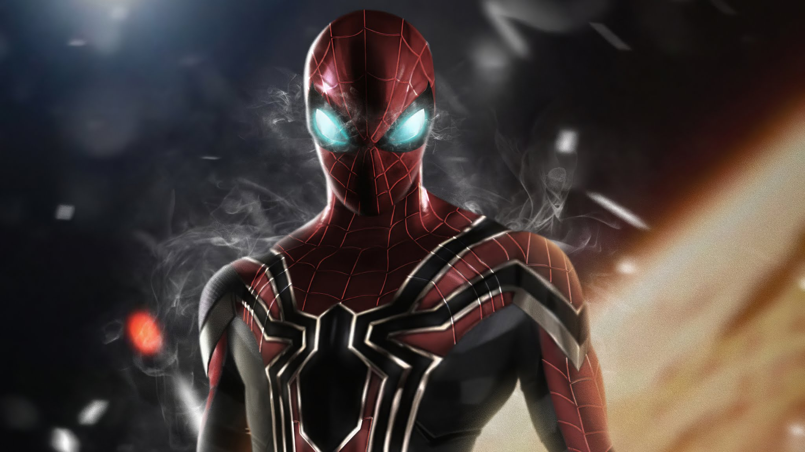

Homem-Aranha
Homem-Aranha Peter Parker era um estudante comum, até o dia em que foi picado por uma aranha radioativa durante uma visita a uma feira científica. A picada lhe conferiu habilidades extraordinárias, como força sobre-humana, agilidade, o poder de escalar paredes e, principalmente, um "sentido-aranha" que o alerta de perigo iminente.
Peter Parker
Peter Parker é uma pessoa com a qual muitos se identificam. Ele não é apenas um super-herói, mas também um jovem lidando com suas próprias dificuldades, como relacionamentos, escola e trabalho. Como fotógrafo do Clarim Diário, ele também lida com a fama de ser o Homem-Aranha enquanto tenta manter sua identidade secreta. Ele já viveu várias perdas, especialmente a morte do seu tio Ben e de sua amada Gwen Stacy (em algumas versões da história), o que sempre o faz refletir sobre suas escolhas e a carga emocional de ser um herói.
Filmes
O Homem-Aranha teve diversas versões no cinema, começando com a trilogia dirigida por Sam Raimi. Em Homem-Aranha (2002), Peter Parker ganha seus poderes após ser picado por uma aranha radioativa e enfrenta o Duende Verde. Homem-Aranha 2 (2004) explora suas lutas internas enquanto enfrenta o Dr. Octopus, enquanto Homem-Aranha 3 (2007) apresenta os vilões Venom, Homem-Areia e o Duende Verde Jr..